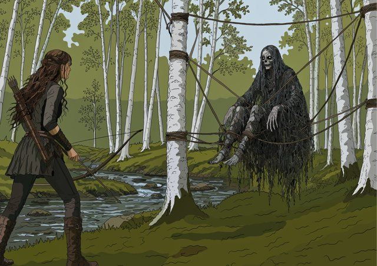
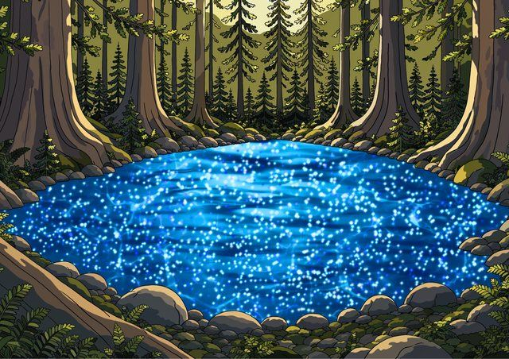

Drawn before it is bound.
No stock art, no licensed covers, no AI. Five illustrations are drawn for every edition, then printed, foiled, edged and bound by hand.
The drawing.
Line work first, on an iPad in Procreate. Then colour, one surface at a time, each on its own layer so the light can be adjusted without touching the drawing underneath.
On this one: skin, clothes, hair, stone, wood, decor, and everything beyond the window. Seven surfaces over the line work, in that order.
Shown here: Chapter 54, an endpaper panel for A Court of Mist and Fury.
Five panels, one book.
A front cover, a spine, a back cover and two endpaper spreads. The covers are drawn portrait, the spine narrow, and the endpapers wide to run across the full opening.



Four of the five shown flat. The spine is a narrow strip and only reads once the book is bound.
Printed, foiled, edged, bound.
The book starts as a standard paperback. The original text block and pages are left unaltered, so the finished hardcover sits slightly smaller than a shop-bought one at about 13.5cm by 20.5cm.
Boards cut to the book, gold painted onto the page edges in the press, the printed cover wrapped around the case, then the text block set in. Every step happens at the same bench, and none of it is sent out.


Each book is made to order. Current processing time is approximately 2 to 4 weeks depending on current order volume. This is a handmade item, so minor variations may occur between copies, making each book unique.